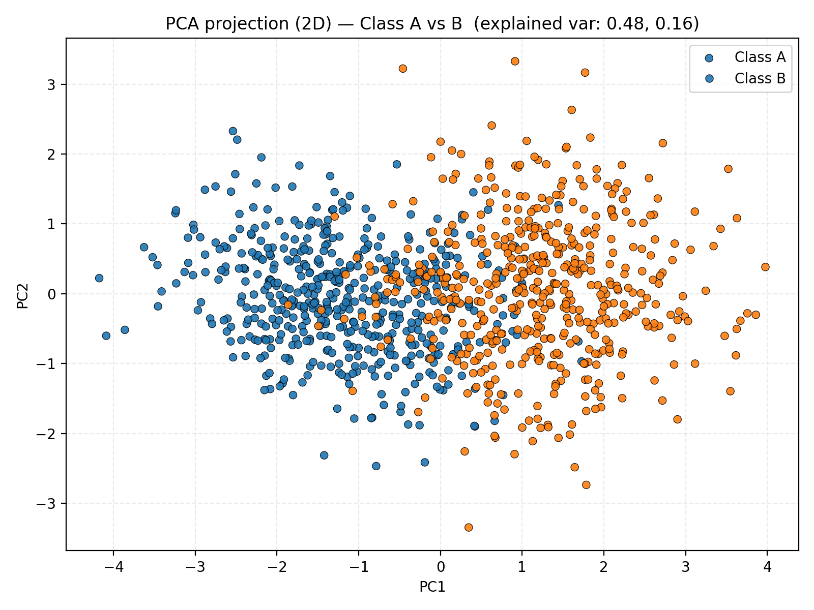
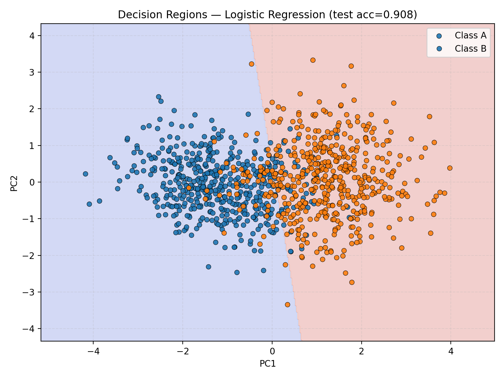

Exercise 2 — Non-Linearity in Higher Dimensions¶
1. Dataset Generation¶
In this exercise, we generated a dataset with 500 samples for Class A and 500 samples for Class B, using a multivariate normal distribution in 5 dimensions.
The parameters for each class are given below:
Class A¶
Mean vector:
Covariance matrix:
Class B¶
Mean vector:
Covariance matrix:
2. Dimensionality Reduction and Visualization¶
Since the dataset exists in 5 dimensions, we cannot visualize it directly.
We use Principal Component Analysis (PCA) to reduce the data to 2 dimensions and visualize it in a scatter plot.

In this plot:
- Blue points represent Class A
- Orange points represent Class B
The projection reveals that the two classes partially overlap in 2D space, forming complex boundaries that are not linearly separable.
3. Observations¶
-
Distribution and overlap:
The two classes overlap significantly after projection.
Although their 5D distributions differ, PCA compresses the most informative variance into 2D, making the overlap visible.
This overlap indicates that there is no single straight line (linear boundary) that can perfectly separate the classes. -
Linear separability:
The dataset is not linearly separable.
A simple perceptron or logistic regression model would struggle to classify the two classes correctly because their projections intertwine in multiple directions. -
Why a neural network is needed:
The relationships among features are non-linear — combinations of multiple dimensions interact in a way that a single linear function cannot capture.
A multi-layer neural network with non-linear activation functions (like ReLU or tanh) can map these complex interactions, effectively learning curved and flexible decision surfaces in the high-dimensional space.
4. Example Visualization of Decision Regions¶
Below is an example (conceptual) of how a neural network could separate non-linear data after training:

The neural network learns curved boundaries that adapt to the geometry of the data, achieving much better separation than any linear model.
Considering a linear nertwork, we would have as result:

5. Conclusion¶
This experiment demonstrates that:
- Data that appears inseparable in lower-dimensional projections may actually be separable in higher dimensions.
- Linear models are insufficient for capturing complex feature interactions.
- Deep neural networks with non-linear activations can approximate these complex boundaries effectively.